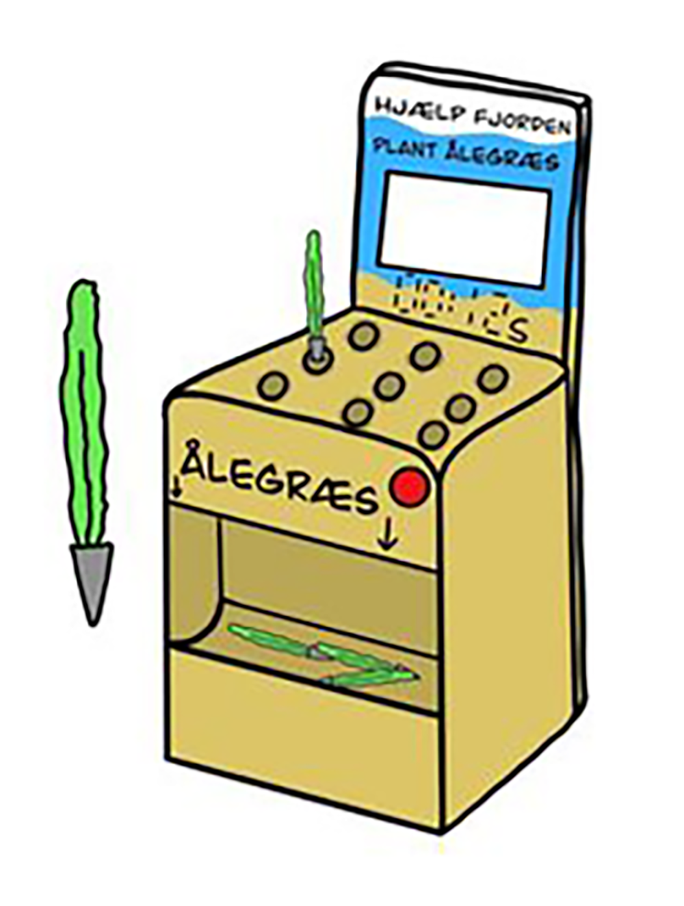
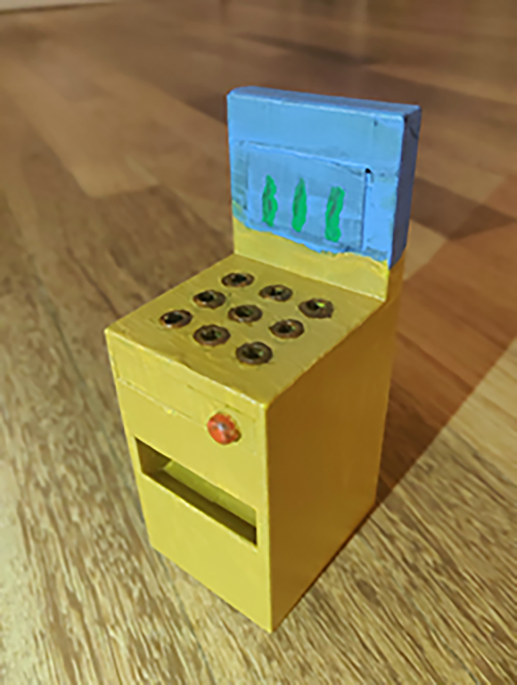

I dette projekt har jeg sammen med en studiegruppe, lavet en installation til Økolariet. Økolariet er et oplevelsescenter, som primært fokuserer på natur og klima. De manglede en ny installation til deres Vejle Fjord udstilling og særligt nævnte de at deres nuværende ålegræs installation manglede en opfriskning.
Ud fra det udviklede vi spillet Plant Ålegræs, som går ud på at man skal plante ålegræs så hurtigt som muligt. Herunder er en tegning af konceptet og en 3d-printet model.
Ud fra det udviklede vi spillet Plant Ålegræs, som går ud på at man skal plante ålegræs så hurtigt som muligt. Herunder er en tegning af konceptet og en 3d-printet model.

